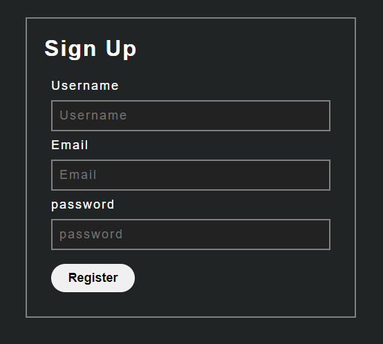
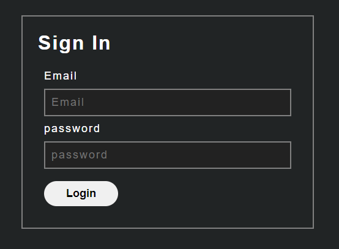
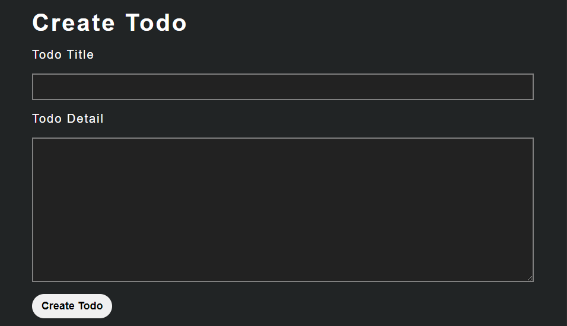

What is Todos?
Todos is an online platform for Humans (In some rare cases animals too) to maintain a check list for the tasks they need to perform throughout the day.(Bro thinks he is funny)
Why To Use Todos?
I mean leaving aside the fact, that we both know it is the best website for todos, it still has good features like, great UI/UX, a really reall unique concept of creating and saving Todo's (no one would have thought of it).
How To Use Todos?
Step 1: Register/Login


Well in order to use the website you must login we will grant you a token after login so that you are authenticated to use the tools.
Step 2: Go to Use Todos

Enter the title of todo you want to create, then add a detailed description about it, and click submit to create the todo.